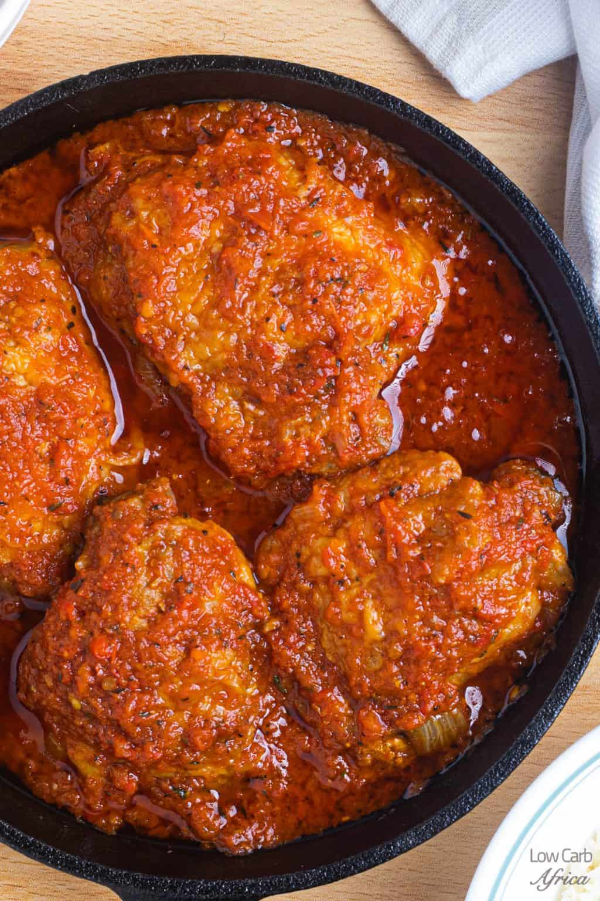
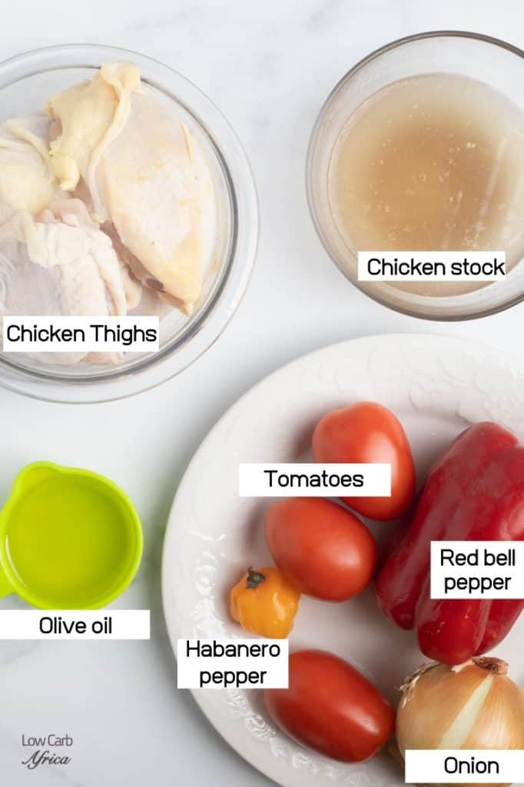
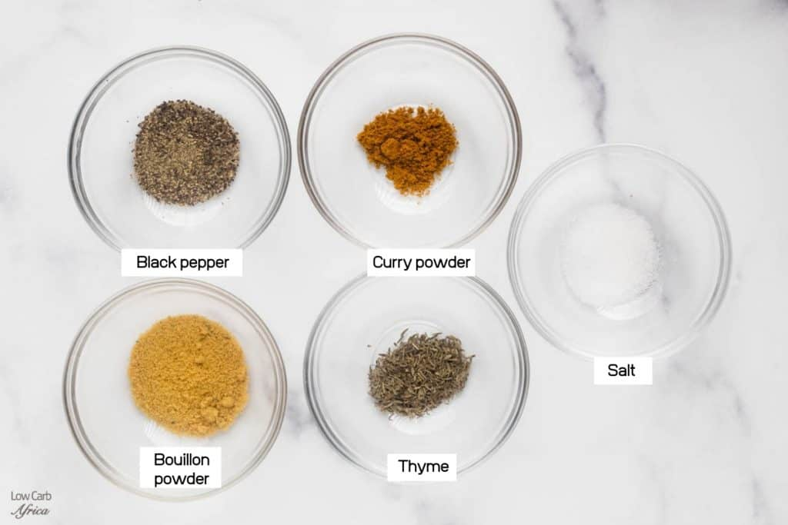
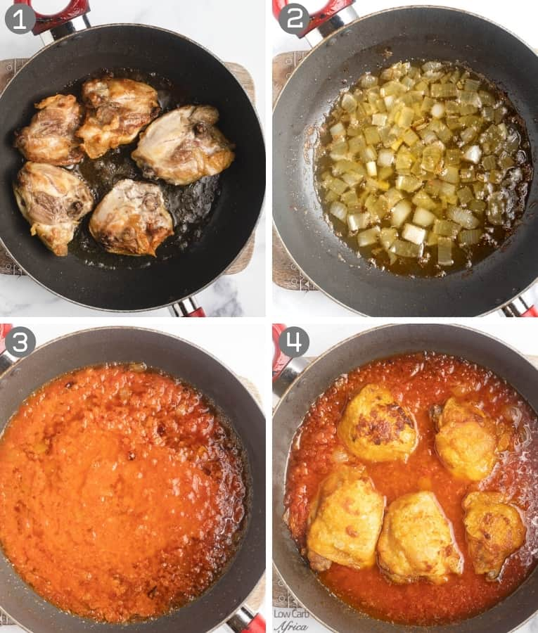
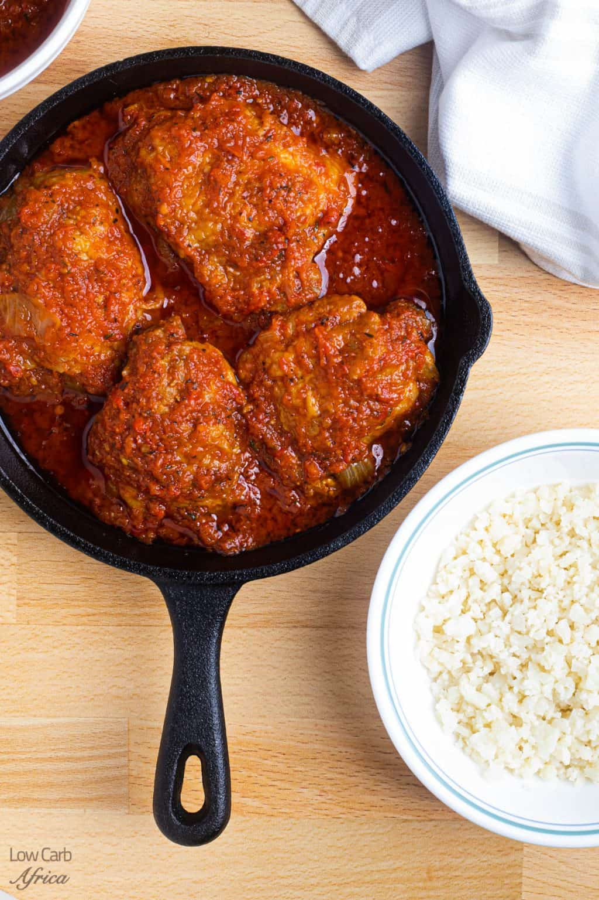

Chicken stew

Description
Nigerian chicken stew is a delightful West African stew made with chicken thighs and simmered in a savory sauce made with tomatoes and peppers. It is so versatile and can be eaten with many different dishes! This chicken stew is bold and spicy and pairs very well with various dishes.
In Nigeria, it is quite common to have a pot of beef or chicken stew in your fridge at any point in time. It makes meal prep a breeze and you can easily whip up a complete nutritious lunch or dinner in no time. This African stew is quite spicy, but there are ways to cut down on the heat. But if you love spicy foods, this chicken stew will be right up your alley!
Nigerian Chicken Stew Ingredients

-
Chicken thighs: You can use chicken thighs or chicken drumsticks, and the cooking process will be the same. Dark meat is preferred because it holds its shape well in the stew. If you use chicken breast, it might break apart in the stew.
-
Vegetables: Roma tomatoes, red bell pepper, habanero pepper, onion. These vegetables form the base of the red spicy sauce.
-
Spices: Bouillon powder, thyme, black pepper, curry powder, salt.
-
Other ingredients: Olive oil and chicken stock/broth.

How To Make This Recipe
- Rub the chicken thighs with salt and pepper and leave them in a bowl. Cut the onions into two and chop one part into small pieces.
- Heat olive oil in a pan and add the chicken one at a time. I like to use a wide skillet for this so I can do everything at the same time. Brown the chicken on each side for about 10 minutes each. When the chicken is done, take it out and leave it in a bowl.
- Blend the tomatoes, red bell pepper, habanero pepper, and the other half of the onion together. If possible do this without adding water, or adding just a little, so the flavors are more potent. Add the chopped onions to the olive oil and sauté till translucent.
- Pour in the blended tomato and pepper mix and cook for about 5 minutes.
- Add in the chicken thighs, chicken stock (broth), bouillon, curry, and thyme, and bring to a boil. Taste for salt and add more if you need to. Simmer for about 20 minutes or until the chicken is done.

Can I Use An Air Fryer To Brown The Chicken?
Yes, you can! I do this quite often and I actually prefer air-fried chicken thighs. The chicken ends up really crispy and there is less monitoring, compared to if you have to brown it over oil.
Preheat your air fryer to 390F and brown it for about 10 minutes on each side, flipping with a tong. The chicken should be spread out on a layer and should not be stacked. Depending on the size of your air fryer, you might have to do it in batches.
Storing And Reheating
This chicken stew keeps very well in the fridge for up to a week, and you can freeze it for up to 3 months. To defrost, refrigerate in the fridge overnight before warming on the stove.
What Can I Eat This Recipe With?
African chicken stew is so versatile and goes great with so many dishes, like rice, spaghetti, or plantains. Being on a low carb diet, I love to eat mine with cauliflower rice or shirataki noodles.

Tips And Variations
- I used chicken thighs for this stew, but you can use chicken drumsticks or mix and match both parts.
- When browning the chicken, do it in batches if you need to, but don't overcrowd the pan.
- If you add water when blending the tomatoes and peppers, pour the mix into a pot and let the excess water evaporate.
- The stew is quite spicy, even with just one habanero pepper. If it's too spicy for you, use half a habanero pepper or use cayenne pepper instead.
Back To Top
Back To Main Menu